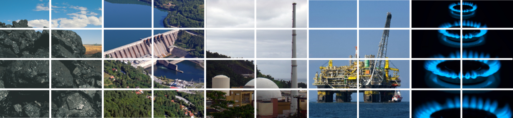

6 Recursos e Reservas Energéticas

6.1 Conceituação
Os conceitos básicos utilizados para o levantamento dos recursos e reservas de algumas Fontes Primárias de Energia são a seguir relacionados.
Petróleo e Gás Natural
Considera-se o volume de óleo e/ou gás, medido nas condições básicas, originado da multiplicação de fatores de recuperação (determinados em estudos de engenharia de reservatórios) pelo volume original provado de óleo e/ou gás, descontando-se o volume produzido até a data considerada.
Fator de Recuperação: é o índice que mede a eficiência das técnicas utilizadas para o aproveitamento da energia natural contida no reservatório, bem como da energia externa adicional introduzida no reservatório, com a finalidade de produzir certa quantidade de óleo e/ou gás do volume original provado.
volume Original de Óleo e/ou Gás: é o volume de óleo e/ou gás, medido nas condições básicas, originalmente existente no reservatório.
produção Acumulada de Óleo e/ou Gás: é o volume de óleo e/ou gás, medido nas condições básicas, produzido no reservatório até a época da avaliação.
condições Básicas de Temperatura e Pressão:
- Pressão absoluta: 1 atm. = 1,0332 kg/cm² (14,7 psi)
- Temperatura: 20º C
Xistota
Os conceitos de recursos e reservas utilizados para o xisto são aqueles adotados pelo Código de Mineração Brasileiro, a saber:
Recurso: uma concentração de materiais sólidos, líquidos ou gasosos que ocorre naturalmente no interior ou na superfície da crosta terrestre de tal forma que a extração econômica é usual ou potencialmente viável.
Recursos Identificados: depósitos ou corpos específicos de materiais sólidos, líquidos ou gasosos cuja localização, qualidade e quantidade são conhecidas por meio de evidências ou de pesquisas geológicas com maior ou menor grau de detalhamento.
Reserva: a parte de um recurso identificado na qual um mineral útil ou uma utilidade energética pode ser econômica e legalmente extraída na época de sua determinação.
As definições para os termos “medida”, “indicada” e “inferida” são aplicáveis tanto para reservas como para recursos identificados, dependendo do grau de detalhamento dos trabalhos realizados:
Medida: material para o qual as estimativas de qualidade e quantidade foram computadas com uma margem de erro menor que 20%, por meio de trabalhos geológicos detalhados e amostragens e análises absolutamente sistemáticas e representativas.
Indicada: material para o qual as estimativas de qualidade e quantidade foram computadas parcialmente por meio de trabalhos geológicos detalhados e amostragem representativa e parcialmente por meio de projeções geológicas razoáveis (extrapolação).
Inferida: material para o qual as estimativas de qualidade e quantidade são baseadas apenas em algumas evidências e projeções geológicas.
Carvão Mineral
As reservas de carvão são determinadas considerando-se os seguintes parâmetros:
Espessura mínima: 0,5 a 1,0 m de carvão na camada.
Reserva medida: reserva contígua aos furos de sonda em um raio de 400 m e área de 0,50 km².
Reserva indicada: reserva externa à reserva medida em um raio de 1.200 m dos furos, representando uma área de 4,02 km².
Reserva inferida: reserva situada além da reserva indicada até uma distância máxima de 4,8 km dos furos. As reservas apresentadas no balanço são geológicas “in situ”. Para determinação das reservas recuperáveis devem ser levadas em consideração as perdas de mineração e de beneficiamento, bem como problemas de falhamentos e intrusões de diabásio.
Potencial Hidrelétrico
Entende-se por potencial hidrelétrico o potencial possível de ser técnica e economicamente aproveitado nas condições atuais de tecnologia.
O potencial hidrelétrico é medido em termos de energia firme, que é a geração máxima contínua na hipótese de repetição futura do período hidrológico crítico.
O potencial hidrelétrico inventariado compreende as usinas em operação ou construção e os aproveitamentos disponíveis estudados nos níveis de inventário, viabilidade e projeto básico.
Tomando-se por base o inventário como etapa em que se mede com toda precisão o potencial, pode-se avaliar a precisão dos valores obtidos para o potencial estimado.
De acordo com estudos de avaliação, já procedidos, os valores estimados se situam em até cerca de 35% abaixo do valor final inventariado, donde se conclui que o potencial estimado é bastante conservador.
Urânio
No Brasil, as reservas de urânio seguem a classificação convencional de geologia, baseado no critério do “Código de Mineração Brasileiro”- medidas, indicadas e inferidas.
As informações da tabela mostram as reservas geológicas. Ao fazer a conversão para tep supõe-se que haja perdas da ordem de 30% na mineração e beneficiamento.
A Agência Internacional de Energia Atômica – AIEA tem uma classificação própria, que inclui o critério de custo de uma extração e beneficiamento de urânio.
Correspondência entre classificações:
Biomassa
Biomassa, destinada ao aproveitamento energético, é uma fonte primária de energia, não fóssil, que consiste em matéria orgânica de origem animal ou vegetal. A biomassa contém energia armazenada sob a forma de energia química. Em relação a sua origem, as biomassas para fins energéticos podem ser classificadas nas categorias de biomassa energética florestal, seu produtos e subprodutos ou resíduos; biomassa energética da agropecuária, as culturas agroenergéticas e os resíduos e subprodutos das atividades agrícolas, agroindustriais e da produção animal; e rejeitos urbanos.
6.2 Recursos e Reservas Energéticas Brasileiras
6.3 Reservas Provadas de Petróleo e Gás Natural
6.4 Reservas Provadas de Petróleo
6.5 Reservas Provadas de Gás Natural
6.6 Recursos Hidráulicos
6.7 Potencial Hidrelétrico
6.8 Reservas de Carvão Mineral e Turfa
6.9 Reservas de Carvão Mineral